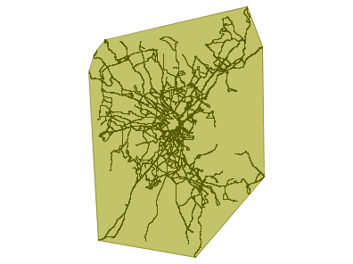

Análisis Espacial
Objetivos
Conocer la funcionalidad de análisis de PostGIS
Que el alumno entienda esta funcionalidad y adquiera capacidades para su uso
Operaciones espaciales
Estas operaciones toman como argumento una o varias geometrías y devuelven otra geometría.
Están definidas en el estándar SFA.
Toman únicamente las coordenadas X e Y de las geometrías ignorando las Z o M
Ya existe alguna implementación de análisis que trabaja con estas coordenadas, pero todavía es mínima
Funcionan con todas las geometrías básicas excepto con las GEOMETRY COLLECION
Buffer
ST_Buffer(geom,distance,optional)
Es el conjunto de puntos situados a una determinada distancia de la geometría. La función acepta en su primer argumento una geometría y en el segundo la distancia con la que construirá la geometría de salida.
buffer
Un tercer parámetro opcional indicará:
El número de segmentos lineales
La terminación del buffer:
'endcap=round' (por defecto)
'endcap=flat'
'endcap=square'
Intersección
ST_Intersection(geom,geom)
Genera una geometría a partir de la intersección de las geometrías que se les pasa como parámetros.
unión
Al contrario que en el caso anterior, la unión produce un una geometría común con las geometrías que se le pasa a la función como argumento. Esta función acepta como parámetro dos opciones, las geometrías que serán unidas:
ST_Union(Geometría A, Geometría B)
o una colección de geometrías:
ST_Union([Geometry])
diferencia
ST_Diference(geom,geom)
La diferencia entre dos geometrías A y B, son los puntos que pertenecen a A, pero no pertenecen a B
Diferencia simétrica
ST_SymDifference(geom,geom)
Es el conjunto de puntos que pertenecen a A o a B pero no a ambas.

Convex Hull
ST_ConvexHull(geom,geom)
El polígono convexo más pequeño que contiene a la geometría


Complejidad en el análisis
Uso intensivo de SQL para definir consultas eficaces y correctas
Estrategias de SQL avanzadas
Definición del problema y planificación de la consulta, diseño previo
¡Uso de índices espaciales!
Tipos de geometrías devueltas
El tipo de geometrías que devuelven estas operaciones no tienen porque ser igual al tipo de geometrías que le son pasadas como argumentos. Estas operaciones devolverán:
Una única geometría
Una geometría Multi si está compuesta por varias geometrías del mismo tipo
Una GeometryCollection si está formada por geometrías de distinto tipo.
Tipos de geometrías devueltas
Podremos utilizar diferentes estrategias:
El uso de clausulas de filtrado, por ejemplo indicando que solo se devuelvan aquellas geometrías cuya intersección sea una línea.
Crear las tablas de salida de tipo Multi, en este caso las geometrías que no sean multi podrán ser convertidas a este tipo mediante la función ST_Multi
En caso de que las geometrías devueltas sean tipo GeometryCollection, será necesario iterar esta colección, y extraer mediante la función ST_CollectionExtract las geometrías en las que estamos interesados, indicandole para ello a la función la dimensión de las geometrías.
Transformación de coordenadas
PostGIS dispone de funciones para la transformación de geometrías:
Rotación:
ST_RotateX(geom,ang)
ST_RotateY(geom,ang)
Escalado:
ST_Scale(geom, factorX, factorY)
Translación
ST_Translate(geom, incrementoX, incrementoY)
Escalado y translación
ST_TransScale(geom, incrX, incrY, factorX, factorY)
Proyecciones
PostGIS soporta varios miles de sistemas de coordenadas.
La gestión de los Sistemas de coordenadas se realiza con las siguientes funciones:
ST_Srid(geom) → devuelve el CRS de la geometría
ST_SetSrid(geom,srid) → devuelve la geometría con el nuevo CRS asignado
ST_Transform(geom, srid) → devuelve la geometría reproyectada
Proyecciones
ST_SetSRID asigna un nuevo sistema de coordenadas, pero mantiene las coordenadas sin modificar, mientras que ST_Transform modifica las coordenadas transformando la geometría al nuevo sistema de coordenadas.
Los operadores espaciales de PostGIS que utilizan dos o más geometrías necesitan que estas dispongan del mismo sistema de coordenadas.
Cambio de CRS a una capa
En caso de que necesitemos cambiar el CRS a una capa por completo no será necesario recorrer todos los registros, podremos utilizar la función:
UpdateGeometrySrid(tabla, columna geom, nuevo SRID)
¡No reproyecta los datos!
Reproyección de una capa
Para reproyectar las geometrías de una capa utilizaremos ST_Transform. Para poder hacer esta operación, hemos de eliminar la restricción sobre el SRID antes de actualizar las geometrías.